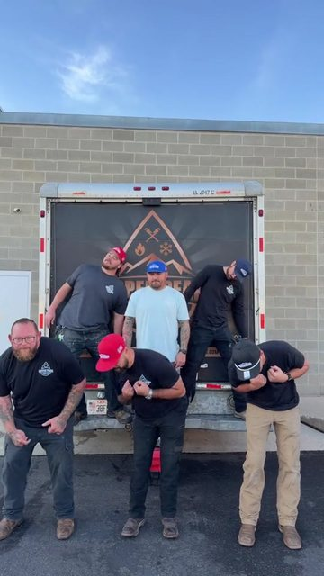
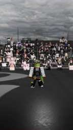
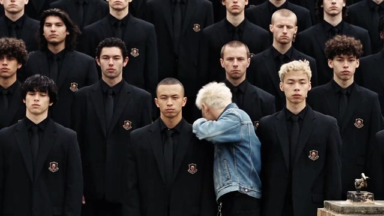
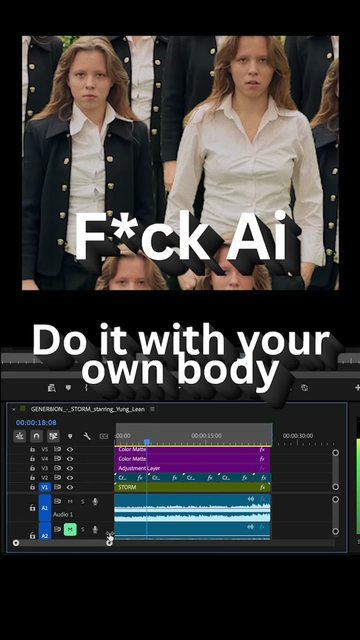
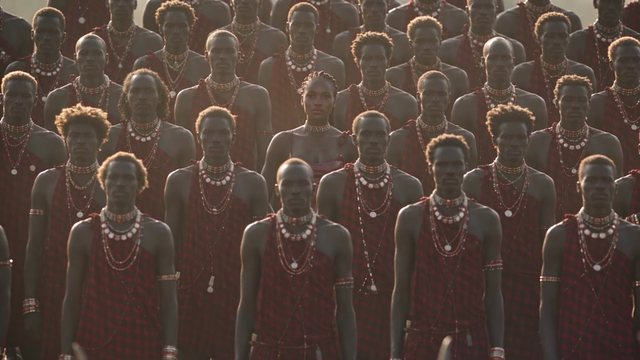

STORM II 계단 군무
모두 움직이는데 한가운데 한 사람만 멈춰 정면을 본다. 이 구도가 고정돼 있어 가운데 인물만 바꾸면 되고, 사진 한 장으로 AI판을 만드는 튜토리얼까지 퍼졌다.
- 🎬
- GENER8ION×Yung Lean의 STORM II 뮤직비디오 속 검은 교복 군무를 따라 하는 챌린지. 모두 움직이는 가운데 한 명만 정면을 본다.
- 🔥
- 2026-04 MV 공개 뒤 9월 VMAs 무대로 다시 터졌고, 가운데 인물만 바꾸면 돼서 영주시 간부판까지 나왔다.
- 😂
- 원본 댓글은 "안무가는 상을 다 받아야 한다", "AI는 사람 예술을 못 대체한다"가 최상위. 영주시판은 "간부들이 해서 감다살"이 가장 많은 공감.
기업 패러디 공공기관 우선 · 없으면 기업·방송·연예인·인플루언서
공공기관영주시 간부 60명 풍기인삼축제유튜브 · 영주시청 · 2026-09-29조회 193만 · 좋아요 3.1만 · 댓글 2,400방송GENER8ION feat. Yung Lean Perform "STORM" | 2026 VMAs유튜브 · MTV · 2026-09-28조회 1246만 · 좋아요 20만 · 댓글 6,000
기업Storm II @yuunglean96 #bluecollar #lipsync #copperpeaks틱톡 · copper.peaks.plumbing · 2026-09-30조회 3.7만 · 좋아요 2,372 · 댓글 128 · 공유 44기업염라대왕도 해봤습니다. STORM II 챌린지 염라대왕이 하고 싶어해서 저승사자들은 퇴근도 못 하고 같이 촬영했습니틱톡 · sumthink.studios · 2026-09-16조회 845 · 좋아요 6 · 댓글 1연예인힉스필드 미워🥹 #전하연 #STORMII #ai틱톡 · jeonhayeon_official · 2026-09-15조회 5.6만 · 좋아요 248 · 댓글 33 · 공유 19일반 패러디 일반 계정 · 10/16 기준 · 공유 수는 틱톡만 공개
조회수 TOP3
조회수 1위Ingin hati mengikuti trend ini,, tapi kok MACHO kaliiiiii 🙈😅🤣😂 .틱톡 · nisnisden · 2026-09-11조회 300만 · 좋아요 15만 · 댓글 799 · 공유 8,145조회수 2위Ikutan yg lagi trend versi Bocil🤣 Video original "Storm II" by G틱톡 · a.rayya.ihzata · 2026-09-11조회 140만 · 좋아요 4.6만 · 댓글 590 · 공유 7,714조회수 3위#gener8ion #younglean #stormii #2026 #рекомендации GENER8ION и Y틱톡 · tomorrrow_ · 2026-04-25조회 81만 · 좋아요 4.1만 · 댓글 100 · 공유 9,037공유 TOP3

공유 1위INI VERSI NO AI GUYS :V STROM II TREND ON TANPANAMA @asaxboy #ro틱톡 · kippawpaw · 2026-09-16조회 32만 · 좋아요 2.6만 · 댓글 611 · 공유 5,179공유 2위How to make the viral Storm II MV edit ✨ Easy tutorial 🎵Storm II틱톡 · vivianselah4 · 2026-09-16조회 3.9만 · 좋아요 229 · 댓글 4 · 공유 1,240
공유 3위I GOT IT STORM II #yunglean #gener8ion틱톡 · nhancach2.24 · 2026-09-11조회 38만 · 좋아요 1.0만 · 댓글 98 · 공유 1,214댓글 TOP3

댓글 1위No Ai, do it with your own body, do it with your own two hands.틱톡 · verticalframe · 2026-09-29조회 56만 · 좋아요 5.3만 · 댓글 336 · 공유 337
댓글 2위A reinterpretation of the STORM II moment. 🇸🇸🇰🇪🪘 This is an AI e틱톡 · nubia.the.creator · 2026-09-30조회 23만 · 좋아요 2.7만 · 댓글 160 · 공유 685댓글 3위HMOOB X STORM II Challenge - Gener8ion, Yung Lean #newmusic #hig틱톡 · jbg4644 · 2026-09-24조회 5.4만 · 좋아요 4,115 · 댓글 53 · 공유 127- 유행 시기
- 원곡 MV 2026-04-24, 한국 유행 8월 말~9월